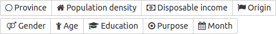

Using mobility data from the Centraal Bureau voor de Statistiek (Central Bureau of Statistics), this website allows you to explore the ways in which Dutch people get around. It provides the average number of minutes and kilometres that a resident of the Netherlands travels in a day. You can filter by demographic and select only the modes of transport you want to see. The items you see below can all be clicked so play around and explore the data for yourself!

Use these buttons to switch between the various demographics. You'll notice money isn't really a factor when it comes to how much people bike, that men drive far more than women do, and that those aged 18 to 24 use public transport a lot.
Display minutes or kilometres travelled per day. Biking is a lot slower than driving so while
Display the data in grouped or separated bars. Grouped is useful to compare groups of people as a whole while separated bars might make comparing modes of transport easier
Click to add/remove a mode of transport. Double click one to remove the rest and show only one